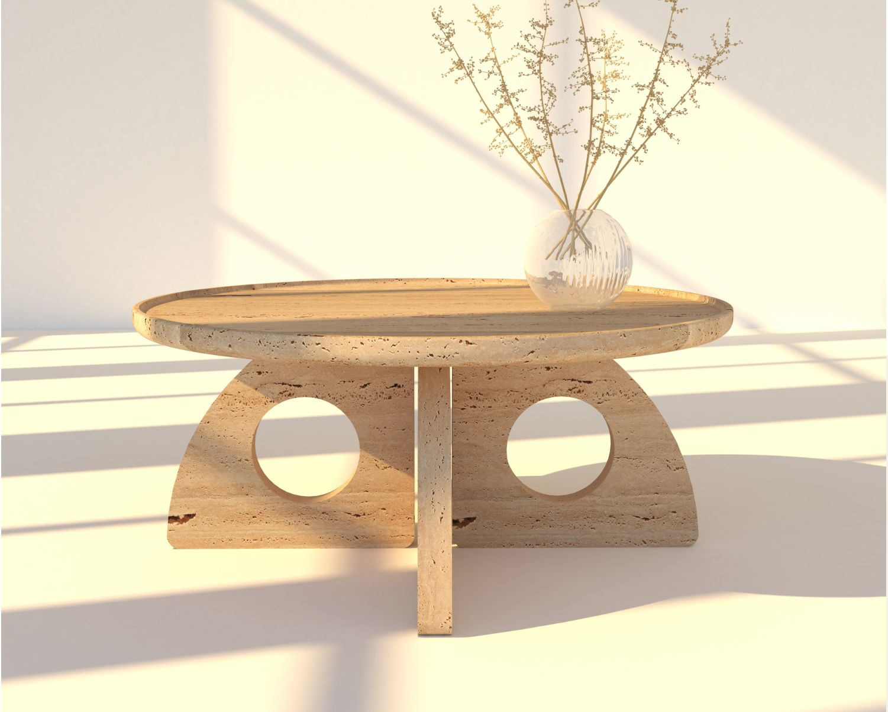
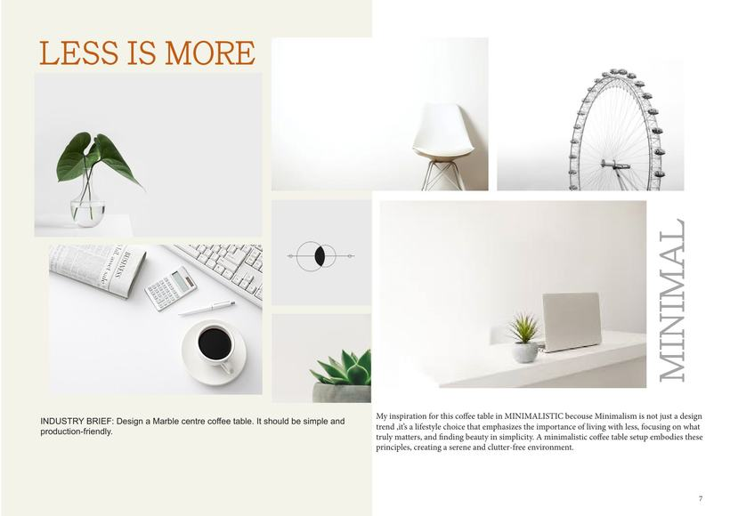
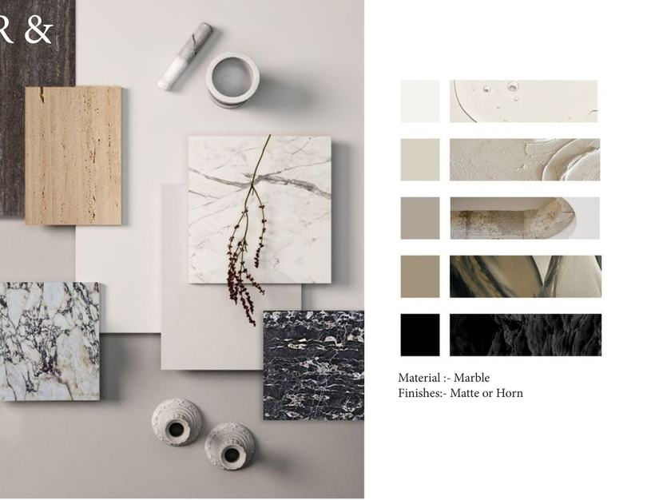
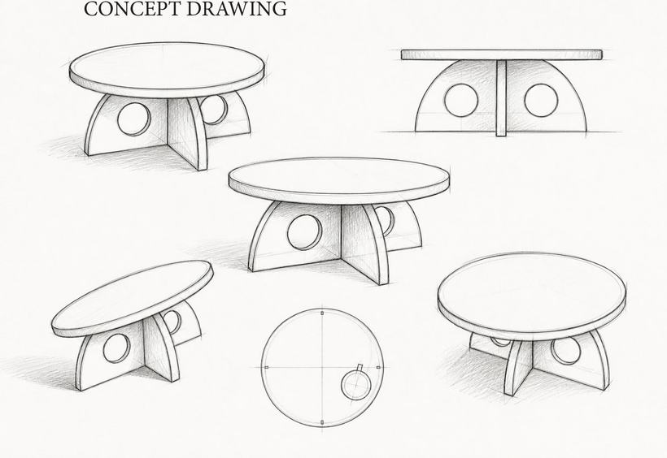
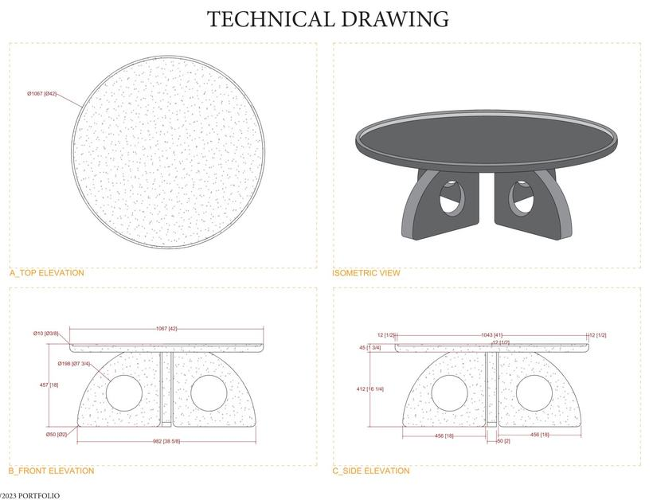
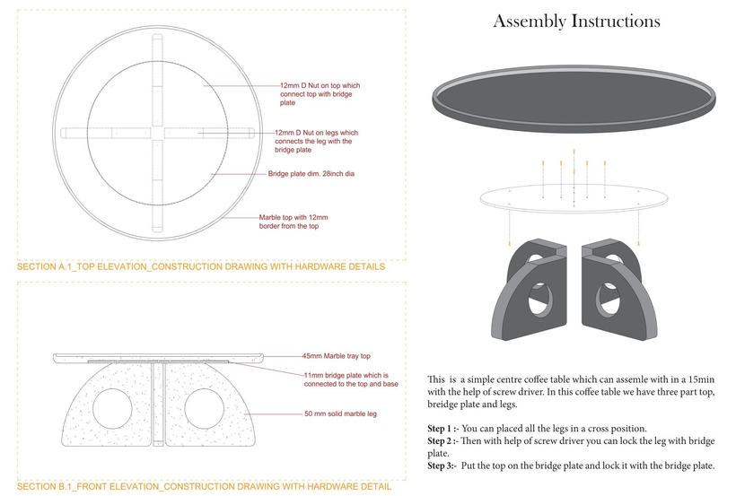
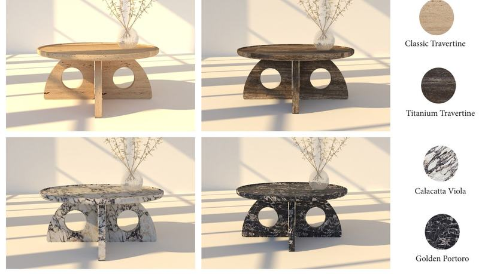

.01
Minimal Coffee Table
Less is more
In a world full of noise and clutter, there is a growing appreciation for simplicity. A simple centre coffee table can be a complete statement of style, the one piece a living room needs.
The table is inspired by minimalism, which is a way of living as much as a design trend: living with less, focusing on what matters and finding beauty in simplicity. Two half-moon marble legs with circular cut-outs cross beneath a round top.
Industry briefDesign a marble centre coffee table. It should be simple and production-friendly.















Product designs © Rayman Artefacts Pvt. Ltd.